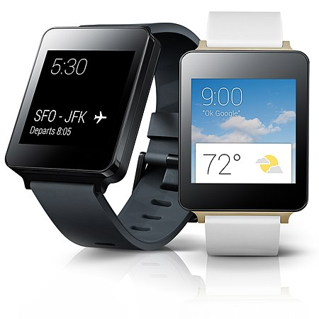
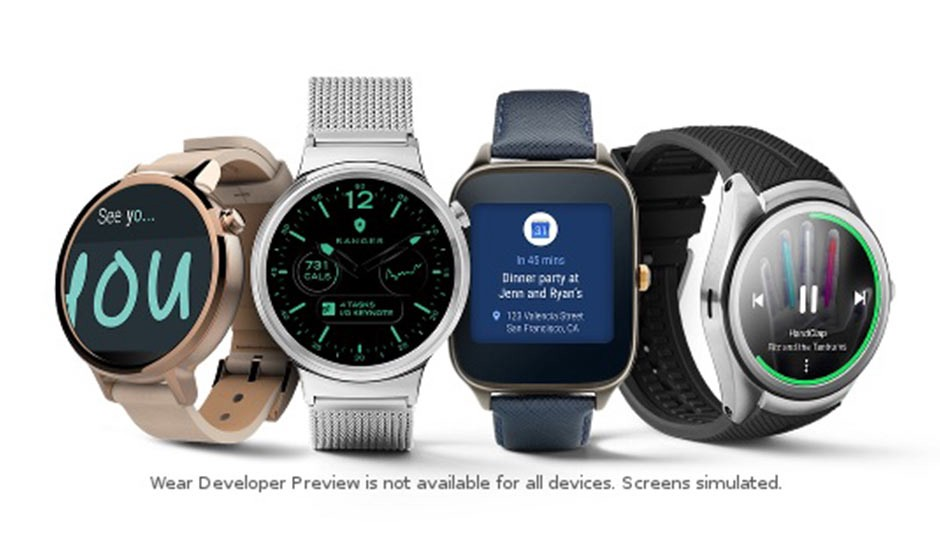
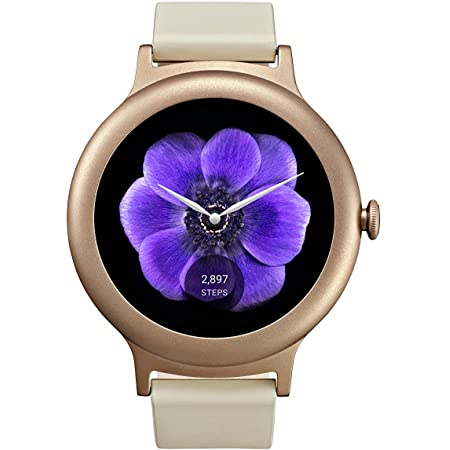

LG
The LG G Watch (model W100, codenamed Dory) is an Android Wear-based smartwatch announced and released by LG and Google on June 25, 2014. It was released along with the Samsung Gear Live as launch devices for Android Wear, a modified version of Android designed specifically for smartwatches and other wearables.[2] It is compatible with all smartphones running Android 4.3 or higher that support Bluetooth LE.
G Watch is, as of June 2014, only available in the United States and Canada at US$229 or in the United Kingdom for £159 on the Google Play Store.[3] As of July 2014 the G Watch was also made available in Australia, France, Germany, India, Ireland, Italy, Japan, South Korea, and Spain.
2013



2021
